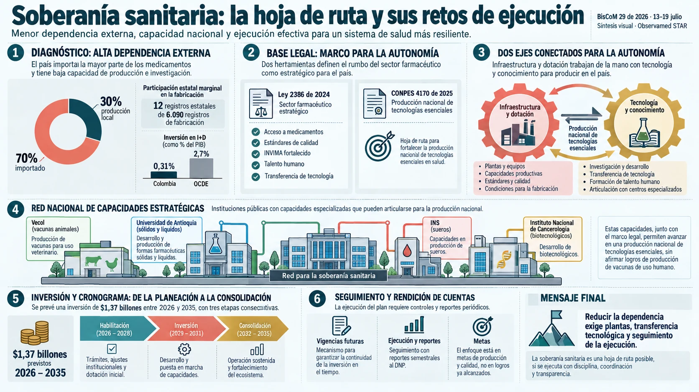

Ley 2386 de 2024 y CONPES 4170 de 2025 sobre Soberanía Farmacéutica en Colombia

BisCoM29de2026 (13 a 19 de julio de 2026) | ISSN-0121-4675 | Res.Min.Gobierno 0036/91 | Año 36 (1991-2026) | Actualizado el 16jul26. La edición está dedicada a los dos documentos que forman el eje de la política pública de soberanía farmacéutica y de tecnologías sanitarias esenciales en Colombia: la Ley 2386 del 25 de julio de 2024, que declara al sector industrial farmacéutico como estratégico para el abastecimiento nacional, y el documento CONPES 4170 del 30 de octubre de 2025, aprobado por el DNP, el Ministerio de Salud y Protección Social y el Ministerio de Hacienda y Crédito Público, que fija la hoja de ruta para la autonomía sanitaria y bio-industrial del país entre 2026 y 2035 con una inversión estatal de 1,37 billones de pesos corrientes. El diagnóstico que sustenta a ambos es el que el doctor quiere que quede a la vista: 7 de cada 10 medicamentos consumidos en Colombia son importados (70% importados contra 30% de producción local); el país importa 8 veces más de lo que exporta en productos farmacéuticos (EUR 3.448 millones de importaciones contra EUR 415 millones de exportaciones en 2023, con las compras concentradas en Alemania, EE.UU., China, Irlanda, Suiza e India); de 6.090 registros sanitarios de fabricación solo 12 pertenecen al Estado —apenas el 0,2%, y de ellos 1 es del INS y 11 de la Universidad de Antioquia—; no existe infraestructura pública operativa para producir vacunas humanas; y la inversión en I+D es del 0,31% del PIB (2023) frente al 0,56% del promedio latinoamericano y al 2,7% de la OCDE. Sobre ese diagnóstico el CONPES 4170 monta dos estrategias —Infraestructura y Dotación (OE1) con $990 mil millones, el 72% del presupuesto, y Transferencia de Tecnología (OE2) con $387 mil millones, el 28%—, una red de cuatro nodos productivos (Vecol S.A., Universidad de Antioquia en El Carmen de Viboral, Instituto Nacional de Salud e Instituto Nacional de Cancerología), un cronograma de tres fases con pico de ejecución de $615.683 millones entre 2030 y 2031, y una relación beneficio/costo de 6,01 en el escenario base. El temario de la edición, tal como lo numera el doctor, es: "1. Ley 2386 del 25 de julio de 2024. 2. CONPES 4170 del 30 de octubre de 2025. 3. Objetivos principales y Puntos clave de esta normatividad. 4. Infografía sobre Ley 2386 del 25 de julio de 2024 en Misión Salud. 5. Presentación, Video y Audio Podcast sobre Ley 2386 de 2024 en folleto de Misión Salud. 6. Infografía, Video y Audio Podcast sobre el documento CONPES 4170 del 30 de octubre de 2025. 7. Presentación del Documento CONPES 4170 del 30 de octubre de 2025 resumido en 13 Diapositivas."
Lo más importante, en gráficas
Las infografías originales de esta edición
Las 17 tablas de esta edición · 135 filas en total
Infografía sobre Ley 2386 del 25 de julio de 2024 en Misión Salud — "Autonomía Sanitaria en Colombia: Hacia la Soberanía Farmacéutica y el Desarrollo Sostenible"
Esta es la pieza que el doctor pone primero porque dibuja la Ley 2386 no como una ley suelta sino como una máquina de tres pisos, y lo que quiere que se vea es que el piso de abajo ya está construido y el de ar…
Infografía sobre el documento CONPES 4170 del 30 de octubre de 2025 — "CONPES 4170: Soberanía Sanitaria: Hoja de Ruta para la Autonomía Farmacéutica en Colombia"
Esta es la tabla más densa de la edición y es donde el doctor concentra la prueba de su tesis: que Colombia no tiene un problema de precios sino un problema de dependencia, y que la dependencia es medible. El b…
Rentabilidad Social y Financiera (Viabilidad Económica) — tabla incrustada en la infografía del CONPES 4170
Tres filas y dos columnas, pero es la tabla que sostiene todo el argumento financiero del CONPES y la única de la edición que admite comprobación aritmética completa. Lo que se ve es que el Estado dice que por …
Diapositiva 1 de 13 — Portada: "CONPES 4170 — Fortalecimiento de la Producción Nacional de Productos Farmacéuticos que Garanticen la Soberanía Sanitaria"
La portada no trae cifras pero fija dos cosas que el doctor quiere que nadie pase por alto. La primera es la firma compartida: el documento no es del Ministerio de Salud sino de los tres —DNP, Salud y Hacienda—…
Diapositiva 2 de 13 — "La ecuación estructural hacia la soberanía sanitaria"
En una sola imagen queda planteado el trato completo que propone el CONPES, y por eso vale la pena leerlo como lo que es: una ecuación con dos sumandos, no con uno. Poner ladrillos sin transferencia tecnológica…
Diapositiva 3 de 13 — "El déficit estructural: La vulnerabilidad sanitaria en cifras"
Esta es la diapositiva de la denuncia, y el doctor la deja hablar sola porque las tres columnas describen tres maneras distintas de estar indefenso. La primera es de plata: se importan EUR 3.448 millones y se e…
Diapositiva 4 de 13 — "La evolución del marco regulatorio: De la asistencia a la industrialización"
Treinta y dos años de regulación farmacéutica colombiana resumidos en cinco renglones, y lo que se ve al recorrerlos es un cambio de pregunta. De 1993 a 2016 el Estado se preguntaba cómo vigilar lo que otros pr…
Diapositiva 5 de 13 — "La prescripción dual: Un ecosistema productivo sincronizado"
La metáfora de hardware y software no es adorno: es la advertencia operativa de toda la edición. Los dos engranajes están dibujados entrelazados justamente para mostrar que si uno gira sin el otro, el sistema s…
Diapositiva 6 de 13 — "Estrategia 1: El despliegue de la infraestructura física"
Aquí el plan deja de ser política y se vuelve obra, y lo valioso de la lámina es que enumera en qué se gasta realmente la plata de una planta farmacéutica: áreas blancas o cleanrooms, sistemas HVAC, agua para i…
Diapositiva 7 de 13 — "Nodos estratégicos: La red nacional de manufactura biofarmacéutica"
Esta es la tabla que convierte la promesa de soberanía en cuatro direcciones concretas, y es la que el doctor va a querer auditar año por año, porque aquí están los nombres, los metros y las fechas contra los c…
Diapositiva 8 de 13 — "Estrategia 2: El ecosistema de maduración y transferencia tecnológica"
La expresión clave está en el subtítulo y conviene no dejarla pasar: "superar el valle de la muerte tecnológico", que es el tramo donde una molécula ya funciona en el laboratorio pero todavía no se puede fabric…
Diapositiva 9 de 13 — "Trayectoria de evolución: Cronograma de hitos y capital (2026-2035)"
La campana de la curva es el dato político de toda la edición: el grueso del dinero no se gasta ahora sino entre 2030 y 2031, $615.683 millones concentrados en dos años que caen en el gobierno siguiente y medio…
Diapositiva 10 de 13 — "Arquitectura financiera: Asignación de capital a 10 años — Presupuesto Total: $1,377 Billones de Pesos Corrientes (Vigencias futuras excepcionales)"
Esta es la diapositiva donde se ve en qué se va realmente la plata, y trae dos hallazgos que el doctor debe mirar con lupa. El primero es de política: dentro de la Estrategia 1, el renglón más grande no es cons…
Diapositiva 11 de 13 — "Viabilidad económica: El impacto de la sustitución de importaciones"
El dibujo hace el argumento antes que las cifras: un cubo diminuto al lado de una torre. Lo que prueba esta lámina es que la discusión sobre si el país puede permitirse producir sus propios medicamentos está ma…
Diapositiva 12 de 13 — "Mandatos institucionales: Recomendaciones de política pública"
Esta es la diapositiva operativa para la veeduría ciudadana, porque es la única que convierte el CONPES en obligaciones con responsable y con fecha. Aquí está el número que hay que anotar y no soltar: BPIN 2025…
Diapositiva 13 de 13 — "2035: La consolidación de la soberanía sanitaria"
La lámina de cierre pone lado a lado el país de hoy y el que promete 2035, y el valor que tiene para el Observatorio es que funciona como contrato verificable: seis afirmaciones, tres que hay que dejar de ser y…
Objetivos principales y Puntos clave de esta normatividad
Esta es la lectura que el doctor hace de la Ley 2386 antes de mostrar una sola imagen, y sirve para medir qué considera él lo esencial. Lo que se ve es que los tres objetivos están redactados en el orden exacto…